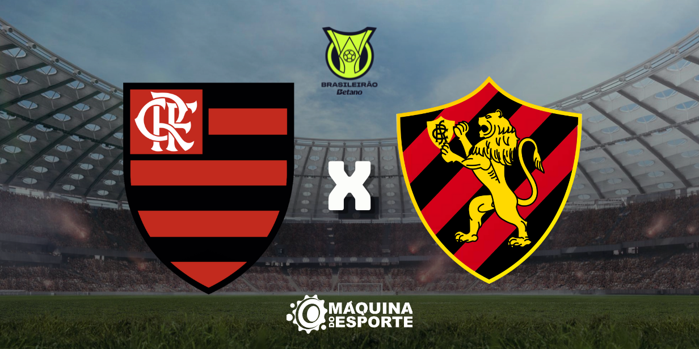

Sport perde de 3 X 0 para o Flamengo e se afunda na tabela
Não deu para o time de Recife
Em um jogo decepcionante, o Sport Club do Recife sofreu uma derrota pesada contra o Flamengo, perdendo por 3 a 0. A equipe rubro-negra dominou a partida desde o início, mostrando superioridade em todos os setores do campo. Com essa derrota, o Sport se afunda ainda mais na tabela do campeonato, aumentando a pressão sobre o técnico e os jogadores.
fonte extraPalmeiras vence Juventude e segue líder
Palmeiras vence mais uma
O Palmeiras venceu o Juventude por 2 x 0 e continua na liderança do nacional. Porém, foi um jogo com muitas bolas perdidas. O Palmeiras saiu de campo sem conseguir se isolar na liderança do campeonato ficando a apenas 1 ponto de diferença do vice líder Flamengo.